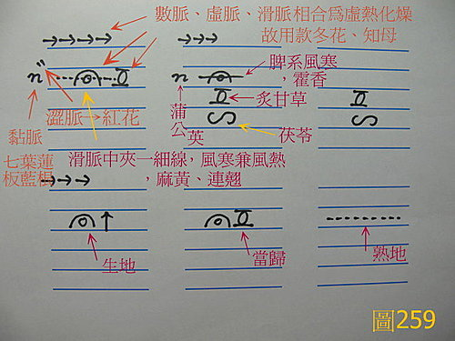

基礎概論 80：中醫並不是玄學，只要兩邊各自抬到一個高度之後，就會發現中醫就是西醫，西醫就是中醫，兩邊是可以互相對應的
作者：陳建元
不管中醫還是西醫，研究的都是人體，因為人體是一致的，所以研究到後來，必然會相合而不相悖，兩邊只要各自抬到一個高度，並從病機這個角度切進去，就會發現所看到的東西，其實都是一樣的，中醫就是西醫，西醫就是中醫，兩邊是可以互相對應的，下面用案例來說明：
案例：感冒～傳染性感冒、感冒後咳不停
我用現代醫學的語言，把一般感冒的算式寫出來：
致病原（約80％是病毒、20％是細菌或其他）╳ 致病原（病毒、細菌或其他）所製造出來的局部組織混亂（充血、水腫、表層細胞崩解）╳ 自身免疫系統（防禦部隊）╳ 身體其他項目的基礎水平（修護部隊）
第一組：致病原（約80％是病毒（病毒種類有A、B、C‥‥‥）、20％是細菌或其他（種類有Ⅰ、Ⅱ、Ⅲ、‥‥‥），最常見的靶位區在上呼吸道。）
第二組：致病原（病毒、細菌或其他）製造出來的局部組織混亂（充血、水腫、表層細胞崩解、疼痛、痰、鼻水‥‥‥等病理現象或病理產物。）
第三組：自身免疫系統（防禦部隊和殲滅部隊）（體內的各種免疫機制，藉由各種機制去崩解掉各種致病原，而當這個系統低落時，致病原將長驅直入，發展出肺炎等更嚴重的疾病出來，甚至會致命，像愛滋患者，這一組就是幾乎垮掉，所以反覆感染不癒，一個感冒可以拖好幾個月。）
第四組：身體其他項目的基礎水平（修護部隊）（譬如平常有血液黏滯度較高的、腸胃吸收不良的、內分泌調控紊亂的、自主神經調控紊亂的、心肺功能差的‥‥‥，很明顯的，這些平常有問題的基礎水平，都不利體內維持一個穩態的環境，相對的，也就是說在細胞供氧、營養運送、代謝清除、細胞修複等方面，都有某個程度的負影響。）
這四組因子相乘，可以表達出一般感冒的演算式，而其中的每一組，又各有很多不同的情況可供選擇，譬如第一組致病原的選擇，在病毒方面就有腺病毒、副流感病毒、呼吸道合胞病毒、‥‥‥‥等各種選擇，所以這四組相乘起來，實際上會有非常多種的不同組合情況，來代表臨床上的真實狀態。
現在讓我們再來看中醫的部分：

〈圖259〉是我5天前剛吃的感冒藥單，這是我開給我自己吃的藥，咳嗽已經約有3～4天了，外證是不咳就不咳，咳就連續咳7～8聲，喉癢就咳，躺下也容易咳，咳時很用力如目脫狀，還會咳得眼冒金星，咳得胸腹肌肉很痛，稍有痰音，但吐出來只是些少許的水沫而已，水沫中有很多細小泡泡，舌色淡白略紫、舌型偏瘦長，不濕也不乾。這個咳嗽，其實是約2星期前被傳染的感冒～傳染性感冒，自己配藥吃1～2天藥後，因為中間有事很忙，也就沒有再吃了，所以剩一個尾巴，這個尾巴沒有自己好，到3～4天前開始嚴重起來。藥是：連翹2 七葉連2 板藍根2 蒲公英2 麻黃1 藿香1 紅花1 款冬花1 知母1 茯苓1 炙甘草1 熟地2 生地1 當歸1 玄參1 （中成藥）吃三天後已經好得差不多了。
肺脈：風寒風熱兼毒而化燥、夾瘀
脾脈：風寒風熱兼毒、氣虛兼有水濕
腎陽：氣虛而兼水濕
心脈：陰血不足而虛熱虛火
肝脈：陰血不足而虛熱虛火
腎陰：明顯的陰虛不足
這完全是用古中醫的脈證方式，用病機的概念所開出來的藥方，有著古老的悠久歷史，但事實上，和上面的西醫感冒演算式，卻是可以完全對應起來的：
麻黃、藿香、連翹→→→這是相對應於第一組來下藥的【用來直接剋制或撲滅微生物致病原，這是去風寒風熱解表藥群，最主要的共性之一，這些藥群在現代的化驗中，也確實有這種功效。而中醫區分風寒、風熱、風濕‥‥‥等不同病機組來分別用藥，其實就是因為剛好對應第一組裡面的微生物種類非常多，但經過古人長時間用人體驗證之後，發現微生物和人體相互作用之後所反應出來的，其實能從脈證上去區分成幾大區塊，故給它們取名字，賦予每類不同的病機字來代表（譬如風寒、風熱、風濕‥‥‥），以便臨床運用，如此才能有的放矢〈注意，不同的病機字，即代表著不同的〝病理模式〞，也代表著和某類藥物的相對應〉】
七葉連、板藍根、蒲公英、連翹→→→這是相對應於第一組或第二組來下藥的【也就是本組最主要的目的，也是抑制或直接殺滅微生物致病原，兼消除感染後的炎性反應，抗炎、抑制炎性滲出。】
紅花→→→這是相對應於第二組來下藥的【我平常沒有這種脈，用力咳幾天後就跑出來了，可以知道這是用力咳嗽，咽喉部的微血管，有破裂出血的現象，這些二次病機不處理，又會反過來對局部感染後的修復造成困擾，除掉這些瘀血，會讓組織修復的更順暢。】
款冬花、知母→→→這是相對應於第二組來下藥的【因為鼻腔咽喉的病毒感染，造成咳嗽、乾燥，用來滋潤鎮咳、降低神經系統的興奮性而起鎮靜作用。】
玄參→→→這是相對應於第二組來下藥的【因為鼻腔咽喉的病毒感染，造成咳嗽、乾燥，對中樞神經有功用，用來鎮痛、鎮靜、解熱。】
茯苓→→→這是相對應於第二組來下藥的【脾系也有感染到，用來排除腸壁水腫所導致的消化不良。】
炙甘草→→→這是相對應於第三組來下藥的【補脾藥的共性有抬高免疫系統的功用，用來促進網狀內皮系統和巨噬細胞、白細胞的吞噬功用，讓康復的時間縮短。】
熟地、生地、當歸→→→這是相對應於第四組來下藥的【這些藥的主要目的，是用來調控身體各部門，讓各部門儘量保持在〝穩態〞的情況下，身體的後援沒問題，前方的戰事才能提早結束。當歸用來造血、生地用來強心，改善心肌代謝，提高能量儲備，增強代償能力，熟地用來加強大腦對整個身體的調控，加強中樞保護性抑制過程，增強神經系統活動的穩定性和調節性，這都製造出 一個有利感染後的修復環境。 另外，這些藥也有拉抬免疫系統的功用。】
中西醫研究到一個程度以後，看到的東西會都是一樣的，這是因為研究的都是人體，而人體基本上是一致的，兩個眼睛一個鼻子，一個心臟一個胃臟，血液流向也一樣，怎麼可能會看到不相同的東西？但是這種對應，必須基於對兩邊的瞭解，都到一個水平以上，如果只是粗淺的感冒病毒套清熱解毒藥，如此當然行不通。
【附錄】：另外，我們在附錄這邊，來探討一個有趣的問題，很多人問我說，奇怪捏，為什麼你把脈出來的數據，和我去檢查出來的數據，基本上都會吻合，好像變魔術一樣，這是怎麼回事？中醫古代在脈學中應該沒有這些西醫名詞啊！其實，這一點都不神秘，原理就在上面，脈把得出來，已經知道不少東西了（脈圖上所顯示出來的，已經知道我目前上呼吸道不利，上呼吸道感染、口乾舌燥、感冒已有一段時間了，但不是很嚴重、痰少、咳嗽較深、稍有腹瀉、消化不良、會喘、胸悶、體力不繼），那你也知道要用哪些藥，而這些藥的機理，是有資料可查的（但要和古中藥的實證經驗、自己的臨床經驗來對照，因為這類資料有些是對的，但有些和實證經驗一對照，明顯就知道只是抓到旁枝末節，或是實驗設計有問題所做出來的答案，這類的就要剔除掉才不會被誤導），然後你再和脈證合起來，排除掉不合理的地方，自然能轉換過去西醫（當然你對西醫也要有一定程度的瞭解），於是，由上面那張脈圖並參合外候之後，便能知道我現在體內的情況是（上呼吸道感染，咽喉微血管出血、炎性反應、炎性滲出、神經系統過度興奮、神經系統調控不穩定、腸壁水腫、消化不良、免疫系統的數據太低、心肌代償能力降低、生病後稍有貧血、生病後腎功能稍有降低）。
【引用請先來信告知徵求同意，若有涉及販售營利等商業行為，版權所有拷貝盜用必究。】
【藥王脈學講壇】http://blog.xuite.net/drjychen/twblog